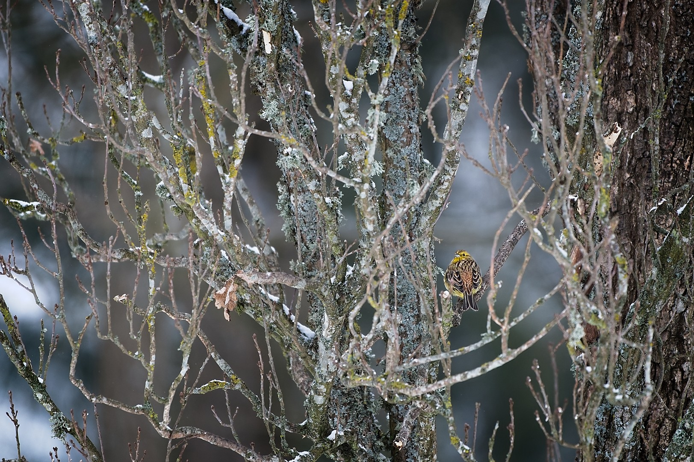
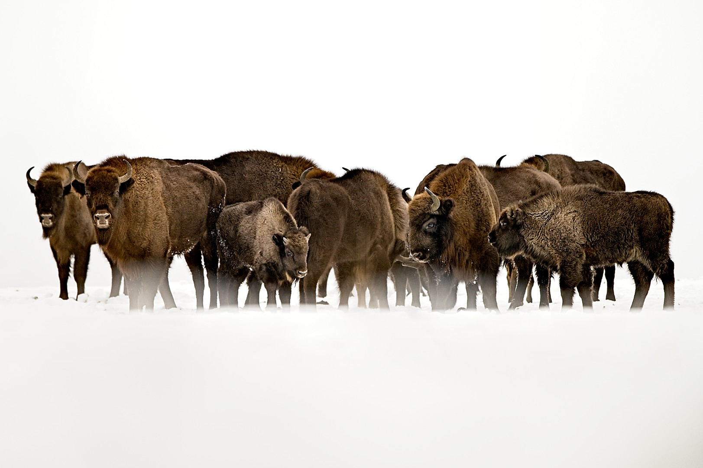

Fotografuję przyrodę przede wszystkim dlatego, że pozwala mi złapać oddech. Poznawać świat, który mnie otacza, i na nowo zachwycać się jego złożonością. Od osiedlowych trawników, miejskich ogrodów i parków aż po miejsca, w których wciąż można poczuć oddech dzikości.
Piszę i fotografuję również po to, żeby zabrać Was ze sobą w ten świat. Przyroda zaczyna się blisko.
Przyroda zaczyna się blisko.

Notatki z terenu to swego rodzaju dziennik, zbierający moje doświadczenia i to, co siedziało mi w głowie. Zapisuję tu wrażenia z godzin i dni poświęconych na przygotowania, wypady w teren i zdobytą w ich trakcie wiedzę. Wszystko to staram się połączyć ze zdjęciami i przedstawić w przystępnej formie.
przejdź do notatek z terenu →
W portfolio zebrałem najlepsze, ale też po prostu ważne dla mnie fotografie, które powstały podczas moich wypadów.
zobacz portfolio →